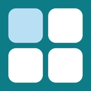

Ditto برای آیفون و اندروید
Ditto را دریافت کنید.
Ditto تابلویی از مربعهای بزرگ و لمسی است. هر مربع متنی را نگه میدارد که بارها و بارها به کار میبرید — یک بولوس سرم، یک دستور آزمایش، شروع یک آنتیبیوتیک، جایگزینی پتاسیمی که هر روز مینویسید. آن را لمس کنید تا متن آمادهی جایگذاری شود، یا با صفحهکلید Ditto آن را مستقیم در هر برنامهای تایپ کنید.
بدون حساب کاربری. بدون ردیابی. مربعهای شما روی گوشی خودتان میمانند.
Ditto در یک دقیقه
۹:۴۱
Ditto
خب، Ditto چیست؟
تابلویی از مربعهای بزرگ. هر کدام متنی را نگه میدارد که بارها و بارها تایپ میکنید.
مثلاً چه متنی؟
یک بولوس نرمالسالین. آزمایشهای اورژانسی. یک ست دستور پنومونی. پتاسیمی که هر روز جایگزین میکنید.
و بعد؟
یک مربع را لمس کنید؛ متن کپی میشود و آمادهی جایگذاری است.
یا صفحهکلید Ditto را داخل هر برنامهای باز کنید و لمس کنید: متن مستقیم تایپ میشود.
میتواند ببیند چه مینویسم؟
نه. نه حساب کاربری دارد و نه ردیابی. مربعهای شما روی گوشی خودتان میمانند.
از کجا بگیرمش؟
همینجا.
App StoreGoogle Play
نسخهی کامل را میخواهید؟ همهی کارهای Ditto را ببینید.
Ditto را امتحان کنید
۹:۴۱
Ditto
یک مربع را لمس کنید تا متنش کپی شود.
مریم (پرستار)
سلام دکتر احمدی، بیمار تخت ۱۲ حالت تهوع دارد. دستور؟
Ditto
امتحان کنید: یک مربع را لمس کنید تا متنش وارد شود، بعد بفرستید. کرهی زمین صفحهکلید را عوض میکند.